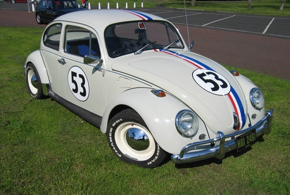

Volkswagen Escarabajo fue concebida en 1931 cuando Ferdinand Porsche y Zündapp desarrollaron el Porsche Tipo 12, el «Auto fur Jedermann» que significa «el coche para todos». Porsche ya había desarrollado un motor refrigerado por aire de cuatro cilindros bóxer y Zündapp estaba desarrollando un motor radial de 5 cilindros refrigerado por agua. Porsche había escogido una suspensión trasera de barra de torsión que había sido inventada por Edward Rumpler.
En 1933, Adolf Hitler encargó a Porsche que diseñara un coche para el pueblo (literalmente en alemán, Volks Wagen). El coche debería tener capacidad para dos adultos y dos niños, con espacio para las maletas y ser capaz de alcanzar los 100km/h. El partido nacional-socialista alemán ya había utilizado el término «Volks» para otros productos patrocinados por el partido, como la Volksradio. Sin embargo, el nombre Volkswagen no sería el oficial hasta unos años después. Este nuevo vehículo se denominó inicialmente Porsche Tipo 60, y luego se bautizó como KdF-Wagen. KdF eran las iniciales de Kraft durch Freude (Fuerza a través de la alegría), la sección de ocio del Tercer Reich. En octubre de 1935 salió el primer prototipo del Tipo 60 conocido como el V1. En 1936 comenzaron las pruebas con los tres prototipos V3 fabricados en las instalaciones de Porsche en Stuttgart. En 1937, los 30 modelos W30, fabricados por Daimler-Benz, ya acumulaban 2.900.000 km de pruebas. Todos los vehículos tenían ya la distintiva forma redondeada y el motor refrigerado por aire en la parte trasera. El modelo tuvo mucho exito que hubo un personaje llamado Herbie ya que el carro contaba con vida propia, hicieron peliculas de este personaje que se distingia porque tenia el N. 53.

Volkswagen Kombi
Volkswagen Kombi, al finalizar la Segunda Guerra Mundial, la fábrica Volkswagen de Wolfsburgo, Alemania, pasó a manos del gobierno británico, el cual recibió el 23 de abril de 1947 una propuesta del empresario holandés Ben Pon para comercializar la marca en los Países Bajos. Con base en un Escarabajo que recorría la planta como coche de carga, el empresario propuso la creación de un modelo carguero comercial que comenzó a proyectarse luego de la aprobación de acuerdo por parte de los directivos de la compañía.
A fines de 1948 comienza el proceso de construcción del entonces denominado Volkswagen tipo 29. Al presentarse al público, adquirió la nomenclatura definitiva de Volkswagen Tipo 2, como consecuencia de que el Volkswagen Sedán posee la nomenclatura Tipo 1. El nombre Transportert1 ya era utilizado en 1950 y en la actualidad se halla registrado. Su producción comenzó 8 de marzo de 1950. Impulsado por un motor bóxer de cuatro cilindros de 25 CV refrigerado por aire en la parte trasera, con capacidad para cargar 760 kg y alcanzar una velocidad máxima de 80 km/h y entre las utilidades que le fueron descubiertas al poco tiempo están su adaptación como ambulancia y como coche de bomberos. Durante esta época se introduce una versión con asientos desmontables y tres ventanas en ambos lados de hasta 8 plazas con innumerables posibilidades de configuración de asientos, lo cual lo transforma para obtener el espacio deseado, se la designa como Volkswagen Transporter Kombi (por la voz alemana Kombiwagen).
En septiembre de 1951, en el Salón Internacional del Automóvil de Frankfurt, Volkswagen presenta el Samba, un microbús de lujo de la línea Transporter; el cual posee espacio para siete pasajeros, ventanas laterales, ventanillas curvadas en las esquinas del toldo y techo corredizo de lona.
En 1952, Westfalia-Werke desarrolla un modelo para el fin de semana y las vacaciones basado en el Volkswagen Transporter, que posee accesorios desmontables, como una mesa plegable y una cocina. Dada la alta demanda en América del Sur, en 1953 se decide abrir una planta de ensamble en la ciudad brasileña de São Paulo, donde es denominado Volkswagen Kombi. De la misma forma, en 1956 se abre una fábrica de montaje en Sudáfrica. Para finales de la década ya existían más de 30 versiones distintas.